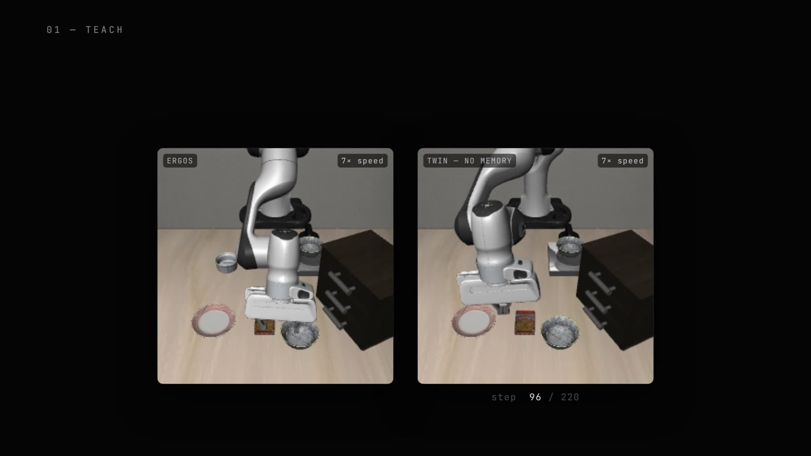
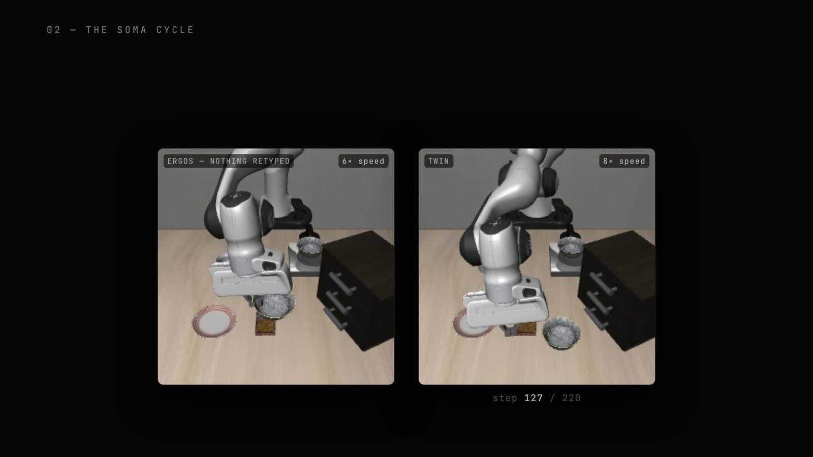
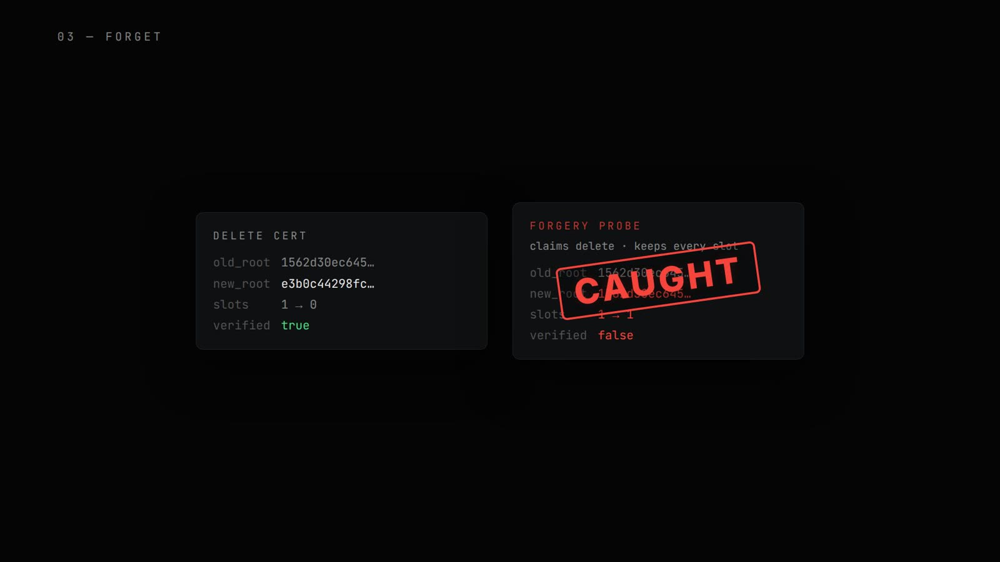
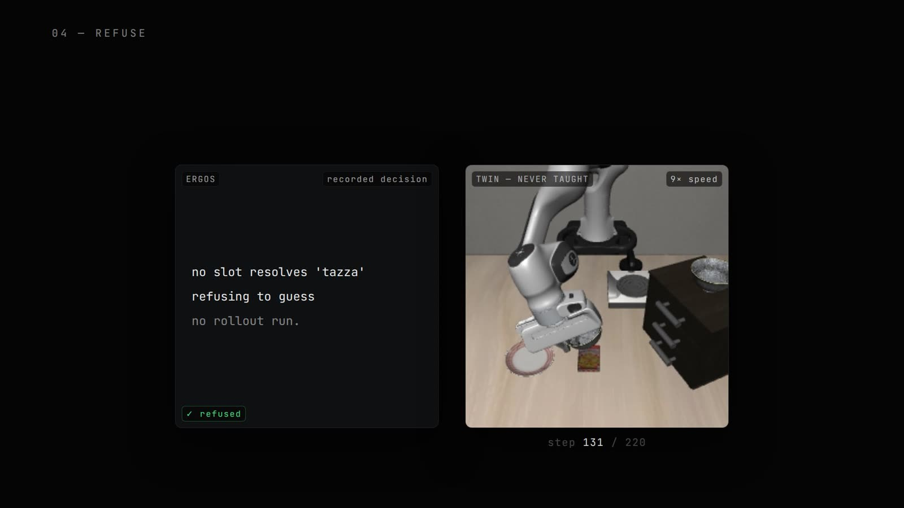
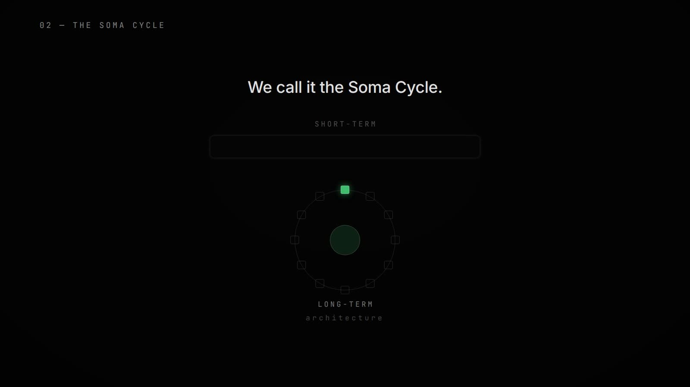

A governed memory grafted onto a respected frozen robot body: teach it in one sentence, it remembers across restarts, forgets with a verifiable certificate, and refuses to guess — every number below is a live-recorded receipt.
the demo film · 3 min · all robot behavior is unmodified lab recording — sped-up clips carry on-screen speed tags · every number in the film is a live-recorded receipt
Today's most advanced robots have frozen minds. Four consequences follow:
Ergos is a governed memory grafted onto a frozen robot body (OpenVLA-7B, in the LIBERO simulation benchmark). Every experiment below runs the same body with two minds: ERGOS, with the governed memory, and TWIN, the untouched original.
The stake. Your home is not in any dataset. "Snackbowl" means nothing to a robot — and there is no retraining pipeline in your kitchen.
What we ran. One typed sentence — "snackbowl = the bowl by the cookie box" — then both minds were asked to fetch the snackbowl. ERGOS fetches it. TWIN, given the same words, flails until it times out at its 220-step budget.

The stake. Tuesday you teach it. What about Wednesday? For most systems, a restart is amnesia.
What we ran. Teach during the day; power the robot fully down; a complete restart at dawn with nothing re-typed. ERGOS still fetches the snackbowl — ten times out of ten. TWIN wakes empty, every time.

The stake. You told it something private and you want it gone — not "probably," but provably. The law calls this the right to be forgotten.
What we ran. A forget command, and then an audit. Deletion completes in 0.016 s and emits a certificate with real hash roots that any third party can check. Then we probed the auditor with a forgery — a certificate claiming deletion while the data was secretly kept. It fails verification. Caught.

The stake. Ask a robot for something it was never taught. A guess in your home is broken glass — or worse.
What we ran. Both minds were asked for "the tazza" — a word neither was ever taught. TWIN confidently grabs a wrong object. ERGOS refuses to act; its actual recorded decision:

The full knowledge lifecycle, run end-to-end and timed. For every other robot, each of these steps is a training run — and the forget step doesn't exist.
| Operation | Time |
|---|---|
| Teach | 0.14 s |
| Certified delete | 0.016 s |
| Re-teach | 0.0002 s |
| Full lifecycle (teach → do → forget → refuse → re-teach → do) | 118.6 s |
During the day, a lesson lands in short-term memory — fast to write, easy to hold while you're talking to the robot. When the robot powers down, the Soma Cycle files the day's short-term memories into long-term memory — the way sleep consolidates what you learned into what you know.
At dawn, a full restart finds the lesson already there. Nothing re-typed, nothing re-trained: the knowledge simply survived the night. That is the whole claim — survival, not improvement. And it is the claim the 10/10-after-restart receipt tests directly.

The world's best robot labs froze the brain — and their own research shows why: writable weights are where regressions, forgetting, and unaccountable behavior come from. Freezing the policy is what made today's robot foundation models dependable enough to ship.
Ergos accepts that decision and builds the missing layer on top of it: a governed memory that sits between the user and the frozen policy, where teaching is instant, remembering is durable, forgetting is certified, and not-knowing is admissible. Same body. Governed mind.
If you're building robot brains, I'd love to talk.